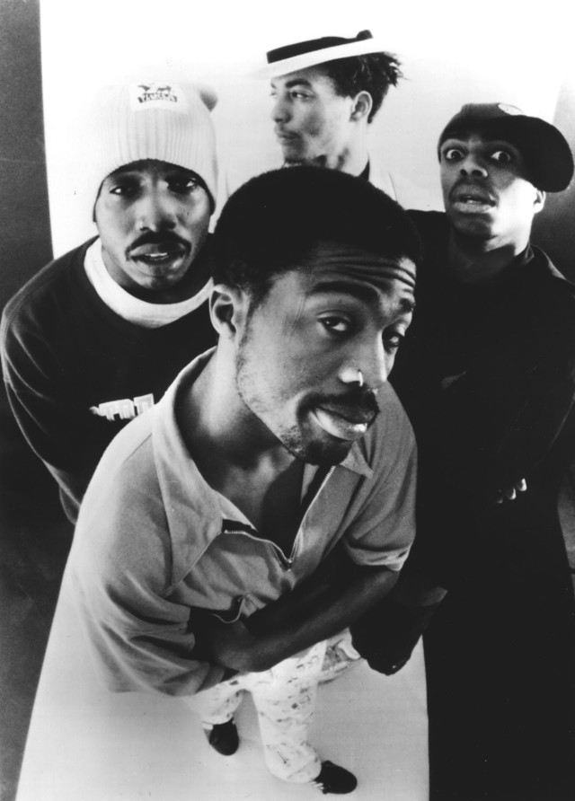

The J Dilla Beat That Caused a Beatdown
Sam KurtzmanThe Pharcyde's "Labcabincalifornia" features a few beats from the now legendary J Dilla. However, at the time of it's recording the Pharcyde wanted Q-Tip to produce their new album. Q-Tip instead provided them with his Detroit-based protege, J Dilla. Q-Tip was a renowned hip hop producer at the time, and known for his work with A Tribe Called Quest, and J Dilla was unkown at the time.
It was only natural that The Pharcyde were skeptical of this young producer, who was still unproven in their eyes. So when he created the beat for the song "Runnin", it was divisive to say the least. After mixing the beat with Dilla's trademark odd time signature, the group and Dilla went out for lunch.
However one member stayed behind and remade the beat with a more traditional time signature and deleted the old beat. He found the original beat's time signature to be too "weird" and inconsistent. When the other group members returned and found out what had happened, a fistfight broke out between two members. After settling the matter over fisticuffs, the group had J Dilla remake the original beat with his usual shifted time signature. It goes to show that sometimes a beat can turn into a beatdown.